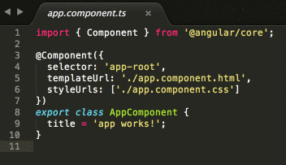

Part 1: Starting your Single Page App
App Foundation
Start with creating your app’s foundation. Open Git Bash (Windows) or iTerm2 (Mac) and rock & roll.
In Git Bash or iTerm2, Navigate to your CodingAndCocktails folder. Type:
cd ~/CodingAndCocktailsThen press enter. You will need to press enter after any command you enter in the command line.
Command line woes?
Revisit the command line worksheet from March: bit.ly/CnCMarWork
- Your home directory is:
- Mac:
/users/<yourUsername> - Windows:
C:/Users/<yourUsername>
- Mac:
- Command to change folders:
cd <folderToGoTo> - Command to make a folder:
mkdir <newFolder> - You can also use ~ as a shortcut in your CLI for your home directory:
cd ~
- Your home directory is:
In Git Bash or iTerm2, use Angular CLI to scaffold the project. Type:
ng new trivia --routingIn Git Bash or iTerm2, Change the directory to the new one Angular CLI created for you. Type:
cd triviaIn Git Bash or iTerm2, run your new app. Type:
ng serveThis command will:
- Compile your TypeScript files into JavaScript
- Start a local server on our computer so you can view your project prior to making it live on the internet
- Watch your project files for changes so that when one of them changes it will automatically reload in the browser for you and avoid the step of having to push the refresh button to see every update you make.
To stop the server and get back to your command prompt, press the
ctrl+ckeys on your keyboard.Windows will take more time for the ng serve process and for the automatic reload in the browser (upon file changes), unless you are running as admin. If you don’t recall doing this earlier, see tips here to make it run faster.
In Google Chrome, navigate to http://localhost:4200 to see your working (basic) app.
Open a new CLI tab or window. You'll want to leave
ng serverunning in your CLI tool to see the live updates as you progress through the project.Mac: In iTerm2, make sure your window is active and then open a new tab by pressing the
cmd+tkeys at the same time.Windows: In Git Bash, open a second Git Bash window.
In iTerm2 (mac) or Git Bash (windows), navigate to your trivia project folder. Type:
cd ~/CodingAndCocktails/trivia
Make a Change
Now, you'll make some updates to the app to see the live reload you get from ng serve! Remember the ng serve command watches for changes to your project files and automatically refreshes the browser for you so you don’t have to. This is called “live reload.”
Open Atom via the command line
Cloud9 users: Skip this step.
Type:
atom .Command not found
If Atom doesn't open (but you know it's installed), your system likely doesn't recognize the
atomcommand.You can configure your system to recognize the command (ask a mentor for help) or you can follow these steps to open it manually:
- From your applications or start menu, open Atom
- In Atom: File >> Open... (Mac) or Open Folder... (Windows)
- Open the trivia folder
- Click the Open button
In Atom, in the left side project pane, click on the arrow next to src to expand the folder.
Next, do the same thing next to the app folder to expand it.
Double click on the app.component.ts file inside that app folder to open it in the right side editing pane.
Edit the
titlevariable to whatever text you want (like: have a cocktail!)This
titlewill end up being the title of your trivia app.
Save your file & go back to the tab in Chrome that has your app running. You should see your updated text!